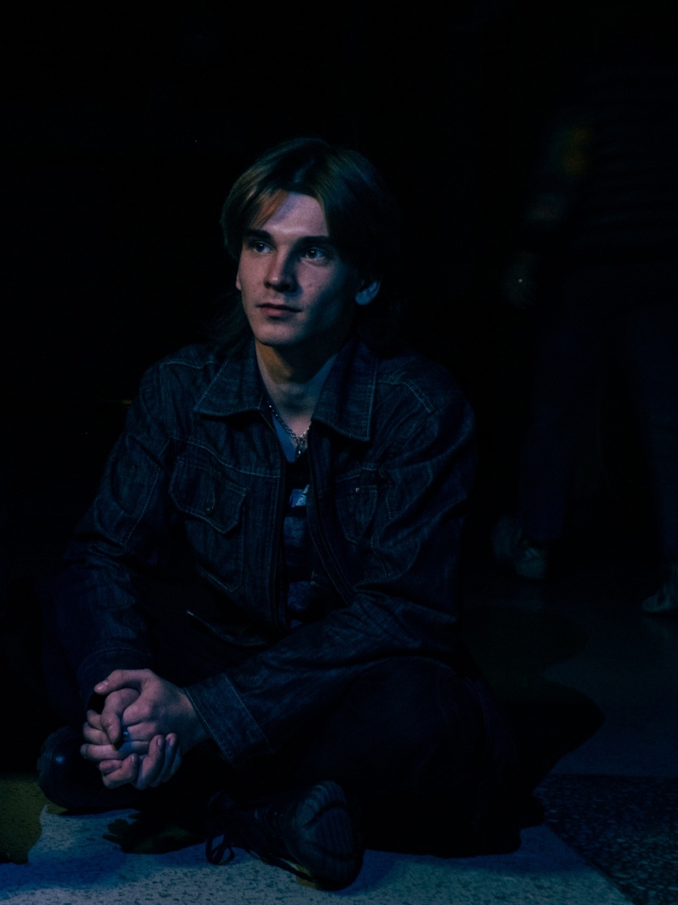

Контакты
Здесь вы можете найти меня в социальных сетях: 
Здравствуйте, уважаемые читатели! Меня зовут Савелий Желтов, и сегодня я хотел бы рассказать вам немного о себе и своих увлечениях. В настоящее время я являюсь студентом ИрНИТУ и обучаюсь в институте информационных технологий и анализа данных.
Мое увлечение не ограничивается только учебой. Я также себя называю программистом-гитаристом. Особенностью моего хобби является то, что я сочетаю две страсти - музыку и программирование. Это удивительное сочетание, которое позволяет мне находить гармонию между творчеством и технической стороной в жизни.
Мне посчастливилось быть частью трех музыкальных групп на протяжении своей музыкальной карьеры. Каждая из них была особенной и запоминающейся. Но сейчас мое внимание полностью сосредоточено на самой перспективной и амбициозной группе из всех, с которыми мне довелось работать. Мы называем себя "Гипотермия". Впереди у нас еще много работы, но мы уверены, что наше творчество найдет свое место в этом мире и принесет радость и вдохновение всем, кто прикоснется к нашей музыке. Следите за нами, и вы узнаете больше о нашем пути и достижениях. Спасибо за внимание!
Лично я сменил уже две группы и сейчас играю в моём понимании самой перспективной. Группа пока не имеет высоких результатов, но обещаем ещё пошуметь.
Однако, хочу продемонстрировать пару видео с конертов предыдущих групп:
9 июля 2022 года. Группа "Revolt":
13 декабря 2022 года. Группа "RED RAVEN"
Здесь вы можете найти меня в социальных сетях: